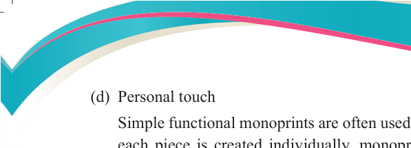
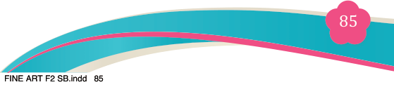
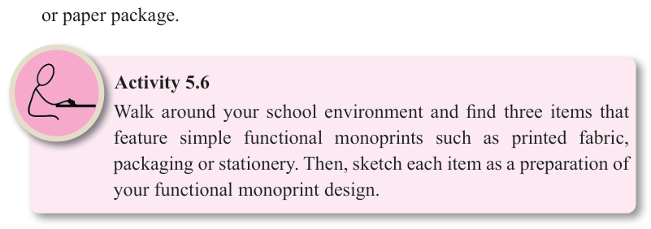

Fine Art for Secondary Schools

85

Student’s Book Form Two
(d) Personal touch
Simple functional monoprints are often used for personalized designs. Since
each piece is created individually, monoprints are great for personalized
designs in various contexts such as fashion, promotional materials and interior
decoration.
(e) Adds beauty
Simple functional monoprints connect art with everyday life by adding
creativity to useful things. They turn regular objects into artistic pieces that are both practical and beautiful.
Materials and tools
Simple functional monoprints are created for a specific purpose, using both variety
of tools depending on the intended application. The following are the general tools used.
General printing tools
(a) Screen or mesh frame: Used when printing monoprints onto fabric or other durable surfaces.
(b) Brayer: Used for applying ink or colour on the printing surface.
(c) Printing block or plate: Acrylic, glass or linoleum surfaces used to transfer the design.
(d) Stencil or masking sheets: Helps create precise, repeatable designs for functional applications.
(e) Cutting tools: Used for cutting stencils, masks or templates. Some examples are knife, scissors and razor blade.
(f) Stamping tools: Used for repeated patterns on surfaces like fabrics, ceramics or paper package.

Activity 5.6
Walk around your school environment and find three items that feature simple functional monoprints such as printed fabric, packaging or stationery. Then, sketch each item as a preparation of your functional monoprint design.
04/08/2025 13:54